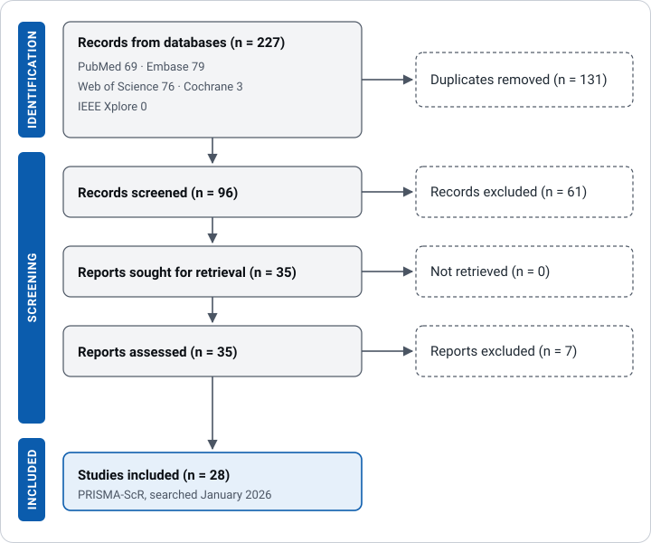

Volumetric Measurement Methods for Pediatric OPG: A Scoping Review
Before building a measurement tool, I wanted to know what the field already does. This review charts how optic pathway glioma size is measured across 28 published studies, and how often anyone checks that two readers agree.
The question
How is the size of an optic pathway glioma actually measured in the published literature, how much of that work is volumetric rather than two-dimensional, and how often does anyone check whether two readers measuring the same tumor agree?
Method
A PRISMA-ScR protocol across PubMed, Embase, Cochrane, Web of Science, and IEEE Xplore. Studies were sorted into manual, semi-automated, fully automated, and approximation-formula measurement categories, then charted for reliability reporting, imaging sequences used, and how growth was defined.

What I found
The review covers 28 studies published between 2008 and 2025. Five of the 28, about 18 percent, reported inter-rater or intra-rater reliability at all.
That matters because a size measurement is only as useful as its repeatability. If two readers would draw the same tumor differently, a change in size between scans can be measurement noise rather than growth.
Where it stands
In revision for submission. The finding that most of this literature does not report measurement agreement is the gap the segmentation study was designed around, which is why the two sit next to each other.